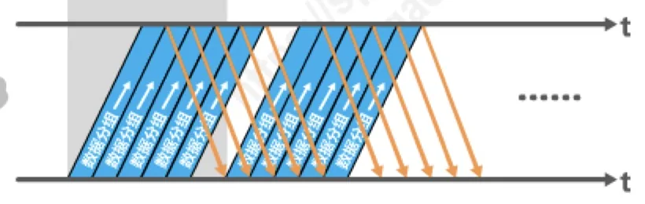
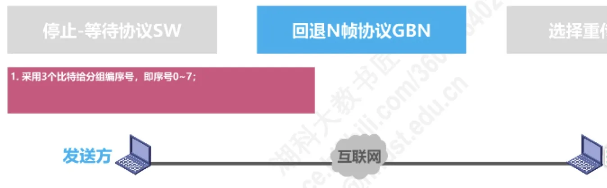
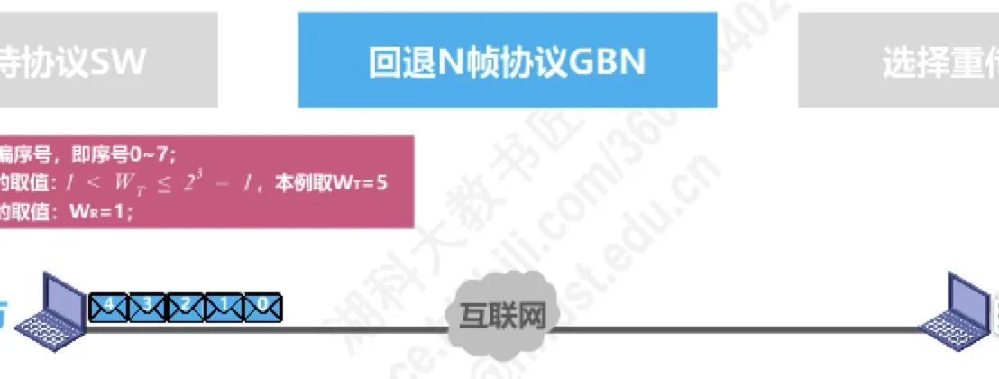
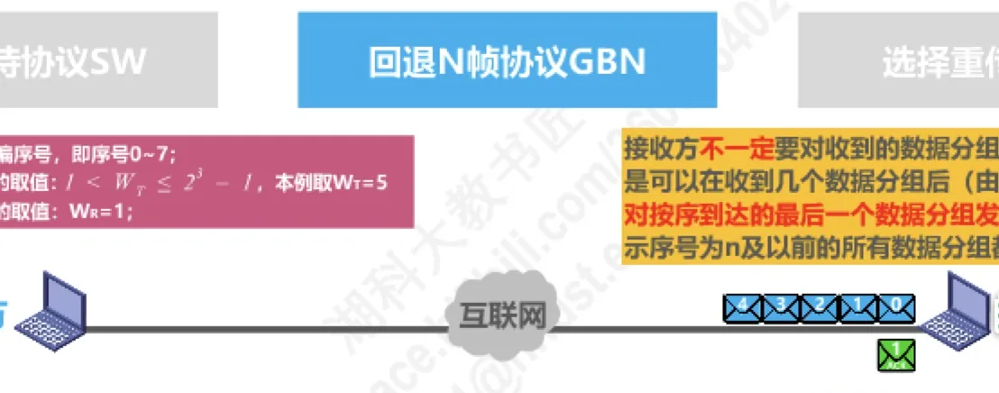
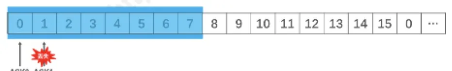

计算机通信与网络 · 第 3 章 数据链路层
3.4.3 可靠传输的实现机制 —— 回退N帧协议
上一节的停止-等待协议虽然简单可靠，但发送方每发一个数据分组就要停下来等确认，信道大部分时间都空着。用「流水线传输」把信道填满，就得到本节要讲的回退N帧协议 GBN（Go-Back-N）。它是滑动窗口类协议的第一个代表，也是后面选择重传协议和 TCP 可靠传输的基础。
1. 从停止-等待到流水线传输
回顾 3.4.2 节的停止-等待协议：发送方每发送一个数据分组，就必须停下等待对方的确认分组，收到确认后才能发送下一个。这样一条链路上同一时刻只有一个数据分组在传，信道利用率很低；一旦出现超时重传，信道利用率就更低。
改进的思路很自然：为什么不让发送方在等待确认的这段时间里继续发送后面的数据分组？这种「不等确认、连续发送多个分组」的方式称为流水线传输，它让信道上始终有数据在流动，从而显著提高信道利用率。回退N帧协议正是建立在流水线传输之上的。

2. 回退N帧协议的三条基本规定
要做到「连续发送、按序可靠交付」，协议必须先用序号把数据分组区分开，再用窗口限制发送方一次能发多少。回退N帧协议的规定可以概括为三条：
- （1）采用 3 个比特给数据分组编序号，即序号为 0～7（一般地，序号比特数为 n 时序号为 0～2n − 1）；
- （2）发送窗口尺寸 WT 的取值范围是 1 < WT ≤ 2n − 1，本例取 WT = 5；
- （3）接收窗口尺寸 WR 的取值是 WR = 1。
发送窗口限定的是「发送方当前允许发送哪些序号的数据分组」：序号落在发送窗口内、且尚未发送过的分组可以发送，序号不在窗口内的分组一律不许发送。接收窗口限定的则是「接收方当前愿意收哪些序号的数据分组」：由于 WR = 1，接收方一次只认一个序号，也就是只能按序接收。

3. 无差错情况下窗口如何滑动
先看理想情况。发送方在未收到任何确认的情况下，把发送窗口内序号为 0～4 的 5 个数据分组连续发送出去；接收方每正确收到一个按序到达的分组，就把接收窗口向前滑动一个位置，同时给发送方发回相应的确认分组，然后才接收下一个序号的到来。
发送方收到对已发送分组的确认后，发送窗口才能向前相应滑动，于是 5、6、7、0、1…… 这些新的序号进入窗口，又可以继续发送。整个过程就像一扇固定宽度的「窗口」沿着序号空间不断前移，这正是滑动窗口这个名字的由来。

4. 累积确认
如果接收方每收到一个数据分组就回一个确认，确认分组的数量会和数据分组一样多，开销不小。为此，回退N帧协议允许累积确认：接收方不一定要对收到的数据分组逐个发送确认，而可以在连续收到好几个按序到达且无误码的数据分组之后（具体收到几个由实现决定），只对按序到达的最后一个数据分组发送一个确认。确认分组 ACK n 的含义是：序号为 n 及以前的所有数据分组都已正确接收。
累积确认还有一个额外的好处：即使某个确认分组丢失，发送方也可能不必重传——因为后续到达的那个确认会把丢失的那次确认所覆盖的范围一并确认掉。

除了累积确认，接收方还可以在自己有数据分组要发送时，顺便对之前按序接收且无误码的数据分组做捎带确认，进一步节省确认分组的开销。
5. 有差错情况：为什么会「回退 N 帧」
现在让信道出错。设发送方连续发送了 0～5 号数据分组，其中 5 号分组在传输中产生误码。接收方检验出误码，只能把它丢弃；此后到达的 6、7、0、1 号分组虽然本身没有误码，但由于接收窗口 WR = 1，接收方还在等待 5 号，这些分组属于未按序到达，同样不被接受。
按协议规定，接收方收到未按序到达的数据分组时，除了丢弃它，还要对最近一次按序接收的数据分组再发一次确认。于是发送方会陆续收到若干个重复的确认分组；一看到重复确认，发送方就知道之前发送的数据分组出了差错，可以不等重传计时器超时就立刻重传（收到几个重复确认就重传，由具体实现决定）。
关键在于重传的范围：发送方发送窗口内某个已发送的数据分组超时重发时，其后续在发送窗口内且已发送的数据分组也必须全部重传。本例中 6、7、0、1 号分组本来是正确到达的，也「受到牵连」被退回重传，这就是所谓的 Go-Back-N（回退 N 帧）。由此可以看出一条重要结论：当通信线路质量不好时，回退N帧协议的信道利用率并不比停止-等待协议高。
6. 发送窗口为什么不能超过 2n − 1
3 个比特只能表示 8 个序号，为什么发送窗口的最大尺寸是 7 而不是 8？设 WT = 8，发送方把 0～7 号分组全部发出去之后窗口就滑满了一圈，紧接着又会发出新一轮的 0～7 号分组。此时若接收方发回的所有确认分组都丢失，发送方会超时重传旧的 0～7 号分组；而接收方那边的序号也已经转回 0，它无法分辨收到的究竟是新一轮的新数据分组，还是上一轮的旧数据分组。这就是窗口尺寸必须小于序号空间的原因。
把这一点与第 2 节的规定合起来看：WT = 1 时就是停止-等待协议，WT > 2n − 1 时接收方无法分辨新旧数据分组，所以 1 < WT ≤ 2n − 1 才是回退N帧协议的合法取值范围，其中 n 是构成分组序号的比特数量。
7. 发送方与接收方的工作规则
（1）发送方
- 发送窗口尺寸满足 1 < WT ≤ 2n − 1，n 是分组序号的比特数量；WT = 1 时退化为停止-等待协议，WT > 2n − 1 时接收方无法分辨新、旧数据分组；
- 在未收到接收方确认分组的情况下，可以把序号落在发送窗口内的多个数据分组全部发送出去；
- 只有收到对已发送数据分组的确认，发送窗口才能向前相应滑动；
- 收到多个重复确认时，可以在重传计时器超时之前尽早开始重传，具体收到几个重复确认就重传由实现决定；
- 发送窗口内某个已发送数据分组超时重发时，其后续在发送窗口内且已发送的数据分组也必须全部重传——这就是「回退 N 帧」。
（2）接收方
- 接收窗口尺寸恒为 WR = 1，因此只能按序接收数据分组；
- 只接收序号落在接收窗口内且无误码的数据分组，收下后把接收窗口向前滑动一个位置，同时给发送方发回相应的确认分组；
- 为了减少开销，不一定每收到一个按序到达且无误码的数据分组就回一个确认，可以在连续收到好几个之后才针对最后一个发送确认（累积确认），或者在发送自己的数据分组时顺带做捎带确认；
- 收到未按序到达的数据分组时，除丢弃外，还要对最近按序接收的数据分组进行确认。
可以看出，回退N帧协议是在流水线传输的基础上，利用发送窗口来限制发送方连续发送数据分组的数量，属于一种连续 ARQ 协议；协议工作过程中发送窗口和接收窗口不断向前滑动，所以这类协议又叫滑动窗口协议。
8. 用一道考题检验累积确认
原讲义用一道真题来检验对累积确认的理解：数据链路层使用回退N帧协议，发送方已经发送了编号为 0～7 的帧；当计时器超时时，若发送方只收到 0、2、3 号帧的确认，则发送方需要重发的帧数是多少？

分析的关键有两点：其一，「只收到 0、2、3 号帧的确认」说明接收方已经把 0～3 号帧全部正确接收、并针对它们中的每一个发过确认，只是针对 1 号帧的确认丢失了；其二，发送方虽然只收到 0～3 号帧的确认，但按累积确认的含义，收到 3 号帧的确认就表示 0～3 号帧都已正确到达，因此应当从 4 号帧开始重传，即重传已经发送过的 4、5、6、7 号帧，共 4 个帧，对应选项 C。
本节小结
- 停止-等待协议的信道利用率低（超时重传时更低），用流水线传输可以让信道上始终有数据在传；
- 回退N帧协议的三条基本规定：n 比特序号、发送窗口 1 < WT ≤ 2n − 1、接收窗口 WR = 1（只能按序接收）；窗口尺寸的上限来自「发送窗口不得达到序号空间大小」这一要求，否则接收方无法分辨新、旧数据分组；
- 无差错时窗口随确认不断前移；有差错时发送方按顺序重传该分组及其后续已发送分组，这就是 Go-Back-N，因此线路质量差时它的信道利用率并不比停止-等待协议高；
- 累积确认（ACK n 表示 n 及以前全部正确接收）和捎带确认可以减少确认开销，确认丢失也未必导致重传；
- 回退N帧协议是连续 ARQ 协议，又叫滑动窗口协议；它与下一节的选择重传协议 SR 的区别在于「出错后重传多少」——本节是回退重传一批，SR 则只重传出错的那一个。